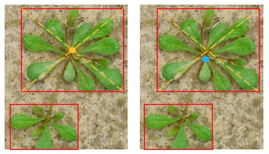

UNDERGRADUATE RESEARCH · JUL 2025–PRESENT
01Weed detection & growth-point localization
Research toward growth-point localization for targeted, herbicide-free weed removal in greenhouses.
What I built
I organized datasets with 2, 9 and 24 weed classes and tested YOLOv8, YOLOv11 and YOLOv11 Pose models at several model sizes (Nano through Large).
How I evaluated it
I compared precision, recall, inference time and growth-point localization error, and manually inspected false positives against annotated examples. The research is ongoing.
Python · YOLOv8 · YOLOv11 · Pose Estimation
